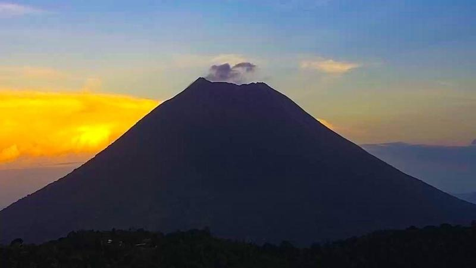
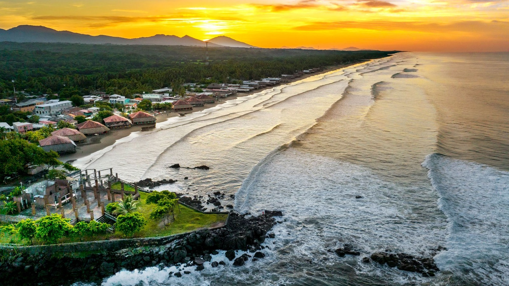

Volcán Chaparrastique Uno de los volcanes más activos del país y símbolo del oriente salvadoreño. Su presencia domina el paisaje de la ciudad de San Miguel.

Playa El Cuco Playa de amplia extensión y arena oscura, ideal para el descanso y el turismo familiar.